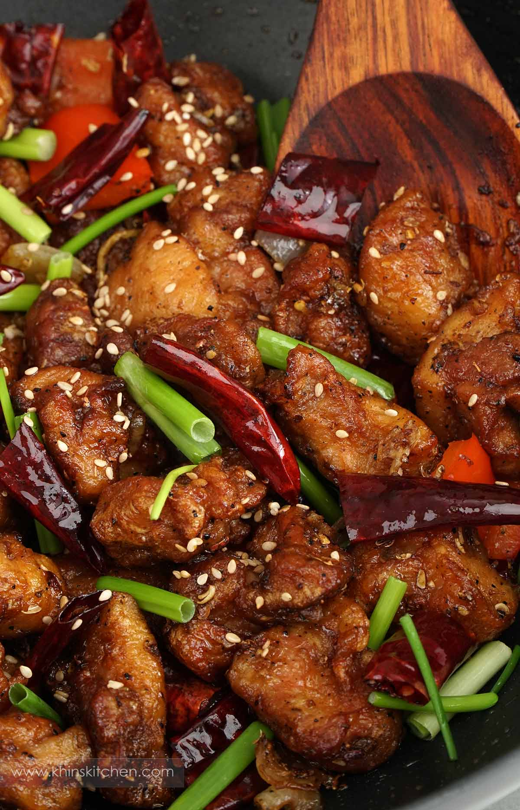

This dish is one of my favourite dishes to order from a Chinese restaurant.
A perfect combination of spicy, sweet and savoury flavour in one dish.
A white plate containing, stir fried chicken, onion, peppers, dry chillies, Sichuan peppercorns and sesame seeds.
What is Szechuan Chicken
Szechuan chicken is known as Sichuan Mala Chicken or Chongqing Mala Chicken. In the Chinese language, it is called La-zi-ji, which means dried spicy chilli chicken. It's popular in China, Chinese restaurants and takeaways in UK, United States, and across the world.Compare to Kung Pao and General Tso's Chicken, this dish is spicier. It has a unique flavour of Sichuan peppercorns and Sichuan dried red chillies.
The cooking method and ingredients can be slightly different depending on the restaurant and family own recipes.